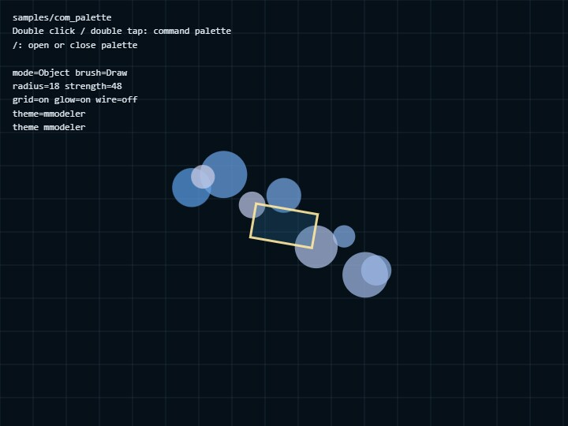

com_palette
English | 日本語

概要
com_paletteは、コアのwebg/CommandPalette.jsをWebgAppから独立したUI部品として使うサンプルです。button、toggle、stepper、select、排他的なmode switchを一つのpaletteへ配置し、command定義とapplication stateをどのように接続するかを確認します。
画面中央の2D previewとHUDは、paletteが更新する同じstateを読みます。Obj / Edit / Scptを切り替えると選択中buttonのactive表示とpreviewが同時に変わり、toggleやstepperを操作すると次のframeから背景や図形へ反映されます。これにより、CommandPalette自身へapplication固有の状態を持たせず、利用側の状態を表示・更新する基本構成を確認できます。
実行方法
- ./com_palette.html を開きます
- WebGPUは使用しないため、通常のCanvas 2DとDOMを利用できるbrowserで動作します
使用しているwebg機能
CommandPalette: command定義からpaletteのDOMを生成し、開閉、ページ切り替え、値の表示を行うgetDefaultCommandPaletteCss(): default CSSを取得し、部分的なstyle変更後に標準styleへ戻すsetStyle(): paletteへ適用するCSS全体を差し替えるsetTheme(): 色などのCSS custom propertiesだけを変更するattachToCanvas(): double click、double tap、/keyをpaletteの開閉へ接続する
実装の流れ
stateにはpause、grid、glow、wire、mode、brush、radius、strength、themeを保持します。commands配列のvalue関数とgetCommandStateは、この状態を読んでtoggle、stepper、select、mode switchの現在値を表示します。
buttonはonCommandで処理し、値を持つtoggle、stepper、selectはonChangeでstateを更新します。更新後にpalette.render()とHUD更新を行うことで、palette、preview、HUDが同じ値を表示します。pageRows: 4を全体の基準とし、pageRowsByPage: [4, 3]で2ページ目だけ3行へ変更します。buttonは1 cell、stepperとselectは1行として数えるため、小さい画面でもcommandが重ならず次ページへ分割されます。
確認ポイント
- double click、double tap、
/keyのどれから開いても同じpaletteが表示されること Obj / Edit / Scptでは一つだけがactiveになり、中央previewも同じmodeへ切り替わること- toggle、stepper、selectの変更がHUDとpreviewへ反映され、paletteを開き直しても現在値が保たれること
Nextで行数を基準に分割された次pageへ進み、stepperとselectが途中で分断されないことCSSで全体styleが変わり、Defでdefault CSSと既定themeへ戻ること
操作方法
- Double click / double tap: command palette
/: command palette- Palette button: command 実行
- Obj / Edit / Scpt: Mode Switch。選択中modeをactive色で示し、中央の図形も切り替える
- Next: 行数を基準に分割された次pageへ進む
- Radius / Strength: stepper
- Brush / Theme: select row
- CSS:
setStyle()の実験 - Def: default style へ戻す